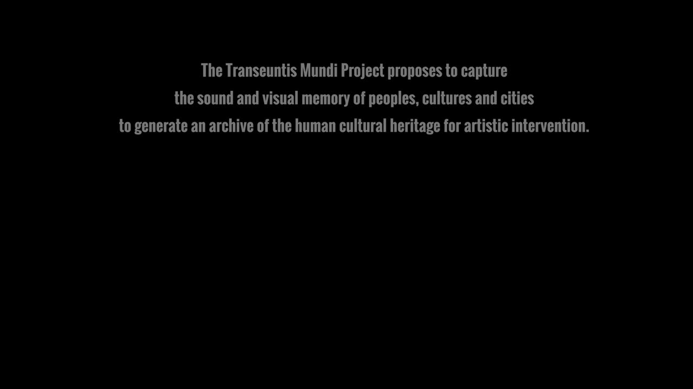
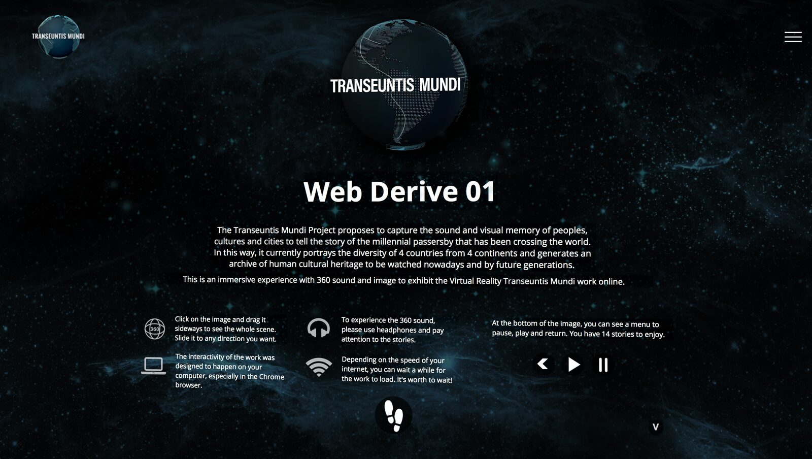
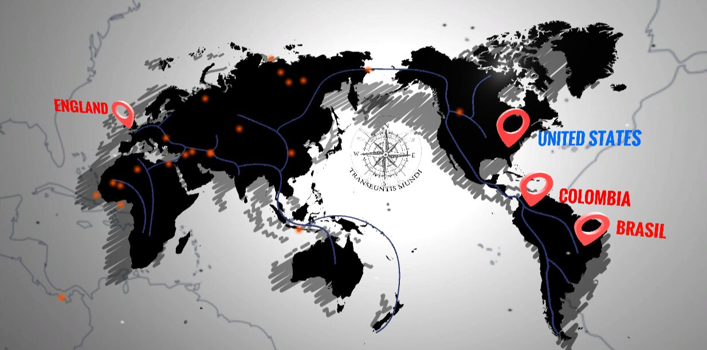
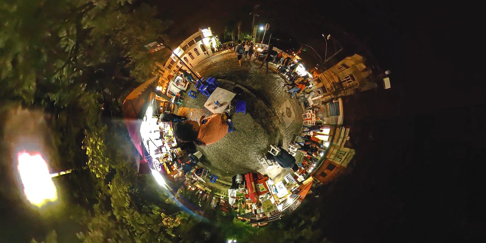

Transeuntis Mundi - Web Derive 01
Title: Transeuntis Mundi - Web Derive 01
Cândida Borges, Plymouth University/UK and Federal University of the State of Rio de Janeiro UNIRIO/Brazil;
Gabriel Mario Vélez, Universidad de Antioquia (Colombia).
Abstract
Transeuntis Mundi is a journey about how mobility through space and time has created geographies and the actual transcultural humanity. It investigates how it can be approached through artistic research and be converted into a nomadic creative practice in transmedial arts, using emerging technologies to generate an archive of human legacy. TM installations are based on the 'transmedial' concept, exploring sound art, acoustic ecology and poetic narrative to promote an unprecedented, interactive and immersive experience for its audience. It evokes the power of ancestry, identity and legacy by presenting a work on WebVR, fully immersive and interactive, featuring a VR application with 360 image and ambisonic sound.
The current version “Web Derive 01” portrays the diversity of 4 countries and fourteen stories from four continents, that have been curated to poetically present our current time in a historical context. We invite NIME 2021 participants to visit the exhibition.
Project Description
This is the presentation of the transmedial immersive web-installation of the Transeuntis Mundi (TM) project at NIME 2021. The installation was originally composed of a virtual reality work, projections and sound sculptures in 360º formats, which allowed the audience to experience transculturalism through emerging technology. In 2020, stimulated by the C-19 pandemic, we created the virtual installation in Web VR called “Web Derive 01” [1].
The Transeuntis Mundi project explores the complexity of the millennial human journey and the resulting cultural diversity [2]. It investigates how it can be approached through artistic research and be converted into a nomadic creative practice in transmedial art, using emerging technologies to generate an archive of human legacy. TM installations are based on the 'transmedial' concept, exploring sound art, acoustic ecology, image studies on stereography and poetic narrative to promote an unprecedented, interactive and immersive experience for its audience. It uses emerging technologies to explore the concepts of legacy, territory, identity as a consequence of transhumance and transculture, and to foster the reflection about human diversity. The project can be better known on its website https://transeuntismundi.com [3] and its trailers.
The expression Transeuntis Mundi comes from Latin, the lingua franca of the expansion of Western Culture. It personifies the human being who has been taking the adventure to discover and explore the world.
Its methodology employs the documentation with immersive technology of pedestrians around the world. Following Careri's [4] methodology of Walkscapes, compositions are based on field recordings in public spaces of multiple locations around the world, using 3D technology for sound and image. It captures the sound and visual memory of peoples, cultures and territories to tell the story of the millennial migrants who crossed the world.
From this archive, starts a process of creation of virtual reality works, videos, photographs, sound landscapes, musical compositions and performance, with the aim to immerse the observer/spectator into an experience beyond their space and time of existence. In short, it is a combination of knowledge, innovation and poetics, supported by the processes of artistic research and mediated by immersive technology.
The current version (“Web Derive 01”) portrays the diversity of 4 countries (Brazil, Colombia, United States and England) and fourteen ‘minimal stories’ from four continents have been curated to poetically present our current time in a historical context, and to generate an archive of human cultural heritage to be seen today and for future generations.

▶This transmedial work is designed to happen as a non-fictional VR application, in which the power of interactivity and immersion through 360° image and ambisonic sounds are crucial to insert the visitor in a global cultural and poetic experience. The virtual reality work was developed using this immersive technology, allowing its visitors to travel through the scenes and stories. The traveler chooses their own journey in an interactive way, to enjoy the navigation of up to 30 minutes through 14 stories of the exclusive TM archive and content. As an expected result, the participants perceive themselves as an integral part of the phenomenon of millennial migrations - the theme of TM exhibitions.
The first Transeuntis Mundi Virtual Reality (VR) work is called “Derive 01” and was launched in Sept 2019 in Colombia, as part of our installation “Passage: feet on Earth”. Its physical exhibitions toured from then till March/2020 through 3 countries and were watched by over 3,000 people. With the rise of the pandemic, we moved our performance into the Web VR environment and developed the “Web Derive 01” - a brand new work launched online in Sept 2020, sponsored by the Cultural Department of Rio de Janeiro.


Opening screen of the WebVR Exhibition


Navigation menu


Niterói/ Brasil, 2019 - a scene of the work.
Installation Notes
The installation happens online at the link www.transeuntismundi.com/nime2021 during the NIME 2021 event and participants will have free access to the exhibition.
Installation Requirements
In this proposal, we virtually present the work "Web Derive 01" for NIME’s visitors during the days of the festival. The installation will be hosted on a platform at the website of the “Transeuntis Mundi Project”, which can support multiple accesses to the exhibition. The exhibition runs on computers and mobile devices. For a better immersive result, we recommend a fast speed internet and the use of headphones.
Media
Website: https://transeuntismundi.com/
Exhibition: www.transeuntismundi.com/nime2021
Acknowledgments
We would like to acknowledge: 1. the participation of our research collaborators – Esteban Henao (Sonora Ingeniaria), Lívia Borges (Casa de Arte e Cultura) and David Romero (UdeA); 2. The support of CMC/Columbia University and OpenDocLab at MIT; 3. The in-kind support of Zoom USA. 3. The universities and institutions that have been hosting and funding this research - the Federal University of the State of Rio de Janeiro (UNIRIO), Plymouth University and Universidad de Antioquia.
Compliance with Ethical Standards
This project follows international Ethical Standards.
Citations
Borges, C., Vélez, G. 2020. Transeuntis Mundi: An Installation about Migration and Human Legacy. Frameless: Vol. 2 : Iss. 1, Article 13. Available at: https://scholarworks.rit.edu/frameless/vol2/iss1/13
↩Borges, C., Vélez, G., 2019. The Transeuntis Mundi Project: an immersion into human cultural heritage. DRHA Radical Immersions 2019: Book of Abstracts. Watermans Arts Centre, London, UK.
↩Borges, C., Vélez, G. 2019. Transeuntis Mundi. Available at: <http://www.transeuntismundi.com>
↩Careri, F. 2002. Walkscapes: Walking as an Aesthetic Practice. Culicidae Architectural Press, Ames.
↩